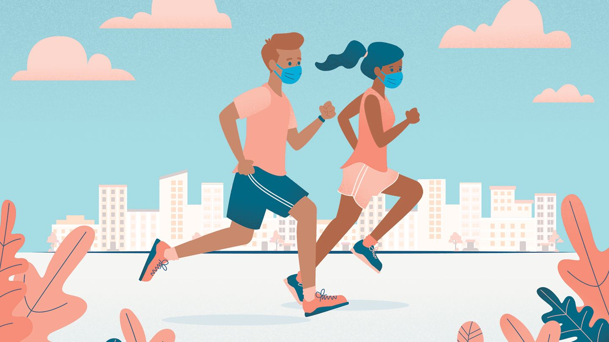

Fitness
Physical fitness is a state of health and well-being and, more specifically, the ability to perform aspects of sports, occupations and daily activities. Physical fitness is generally achieved through proper nutrition,moderate-vigorous physical exercise, and sufficient rest along with a formal recovery plan.Maintain a healthy lifestyle by doing what is right for your body.
Physical activity guidelines
- Doing any physical activity is better than doing none. If you currently do no physical activity, start by doing some, and gradually build up to the recommended amount.
- Be active on most, preferably all, days every week.
- Accumulate 150 to 300 minutes (2 ½ to 5 hours) of moderate intensity physical activity or 75 to 150 minutes (1 ¼ to 2 ½ hours) of vigorous intensity physical activity, or an equivalent combination of both moderate and vigorous activities, each week.
- Do muscle strengthening activities on at least two days each week.